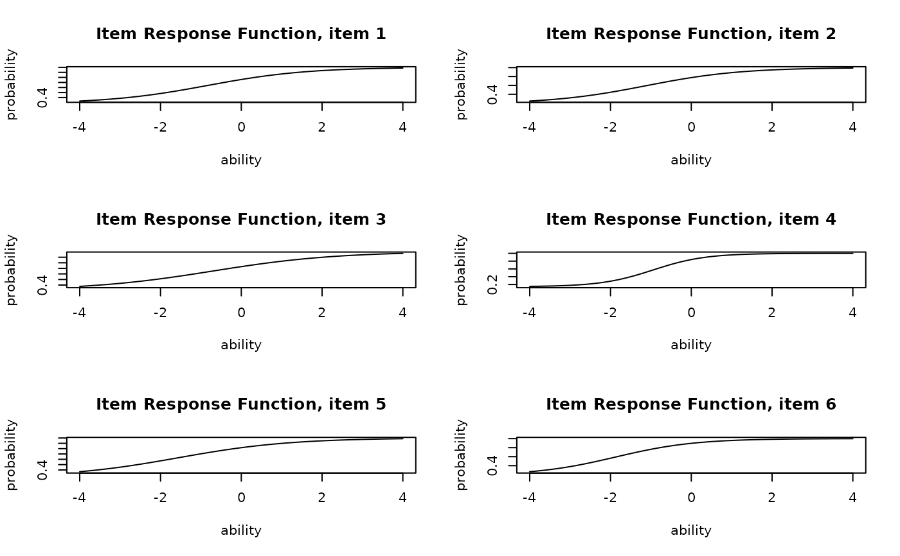
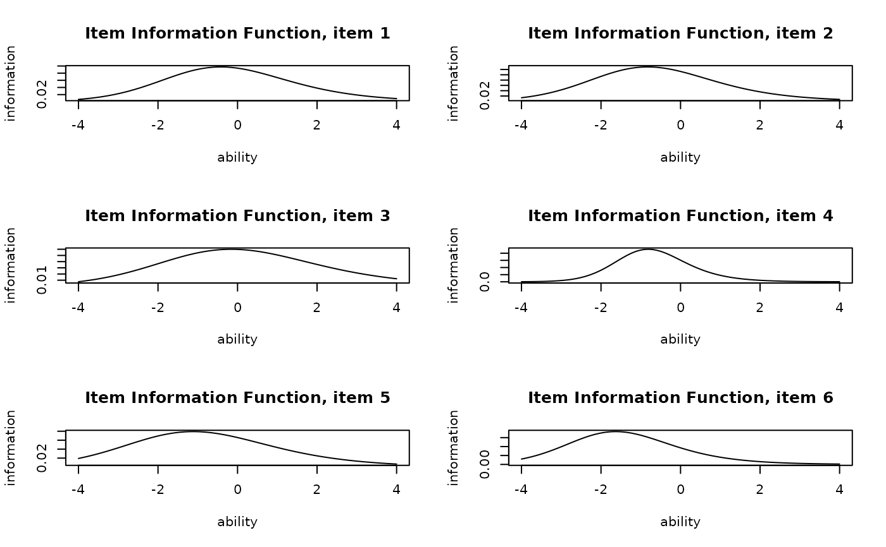
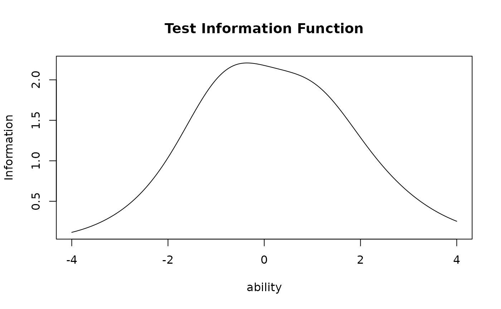

A function for estimating item parameters using the EM algorithm.
Arguments
- U
U is either a data class of exametrika, or raw data. When raw data is given, it is converted to the exametrika class with the
dataFormatfunction.- model
This argument takes the number of item parameters to be estimated in the logistic model. It is limited to values 2, 3, or 4.
- na
na argument specifies the numbers or characters to be treated as missing values.
- Z
Z is a missing indicator matrix of the type matrix or data.frame
- w
w is item weight vector
- verbose
logical; if TRUE, shows progress of iterations (default: TRUE)
Value
- model
number of item parameters you set.
- testlength
Length of the test. The number of items included in the test.
- nobs
Sample size. The number of rows in the dataset.
- params
Matrix containing the estimated item parameters
- Q3mat
Q3-matrix developed by Yen(1984)
- itemPSD
Posterior standard deviation of the item parameters
- ability
Estimated parameters of students ability
- ItemFitIndices
Fit index for each item.See also
ItemFit- TestFitIndices
Overall fit index for the test.See also
TestFit
Details
Apply the 2, 3, and 4 parameter logistic models to estimate the item and subject populations. The 4PL model can be described as follows. $$P(\theta,a_j,b_j,c_j,d_j)= c_j + \frac{d_j -c_j}{1+exp\{-a_j(\theta - b_j)\}}$$ \(a_j, b_j, c_j\), and \(d_j\) are parameters related to item j, and are parameters that adjust the logistic curve. \(a_j\) is called the slope parameter, \(b_j\) is the location, \(c_j\) is the lower asymptote, and \(d_j\) is the upper asymptote parameter. The model includes lower models, and among the 4PL models, the case where \(d=1\) is the 3PL model, and among the 3PL models, the case where \(c=0\) is the 2PL model.
Examples
# \donttest{
# Fit a 3-parameter IRT model to the sample dataset
result.IRT <- IRT(J15S500, model = 3)
#> No ID column detected. All columns treated as response data. Sequential IDs (Student1, Student2, ...) were generated. Use id= parameter to specify the ID column explicitly.
#> No ID column detected. All columns treated as response data. Sequential IDs (Student1, Student2, ...) were generated. Use id= parameter to specify the ID column explicitly.
#>
iter 1 LogLik -3960.28
#>
iter 2 LogLik -3938.35
#>
iter 3 LogLik -3931.82
#>
iter 4 LogLik -3928.68
#>
iter 5 LogLik -3926.99
#>
iter 6 LogLik -3926.05
#>
iter 7 LogLik -3925.51
#>
iter 8 LogLik -3925.19
#>
iter 9 LogLik -3925.01
#>
iter 10 LogLik -3924.9
#>
iter 11 LogLik -3924.83
#>
iter 12 LogLik -3924.8
#>
iter 13 LogLik -3924.77
# Display the first few rows of estimated student abilities
head(result.IRT$ability)
#> ID EAP PSD
#> 1 Student001 -0.75526778 0.5805705
#> 2 Student002 -0.17398682 0.5473606
#> 3 Student003 0.01382379 0.5530503
#> 4 Student004 0.57628040 0.5749110
#> 5 Student005 -0.97449490 0.5915606
#> 6 Student006 0.85233188 0.5820547
# Plot Item Response Function (IRF) for items 1-6 in a 2x3 grid
plot(result.IRT, type = "IRF", items = 1:6, nc = 2, nr = 3)

# Plot Item Information Function (IIF) for items 1-6 in a 2x3 grid
plot(result.IRT, type = "IIF", items = 1:6, nc = 2, nr = 3)

# Plot the Test Information Function (TIF) for all items
plot(result.IRT, type = "TIF")

# }